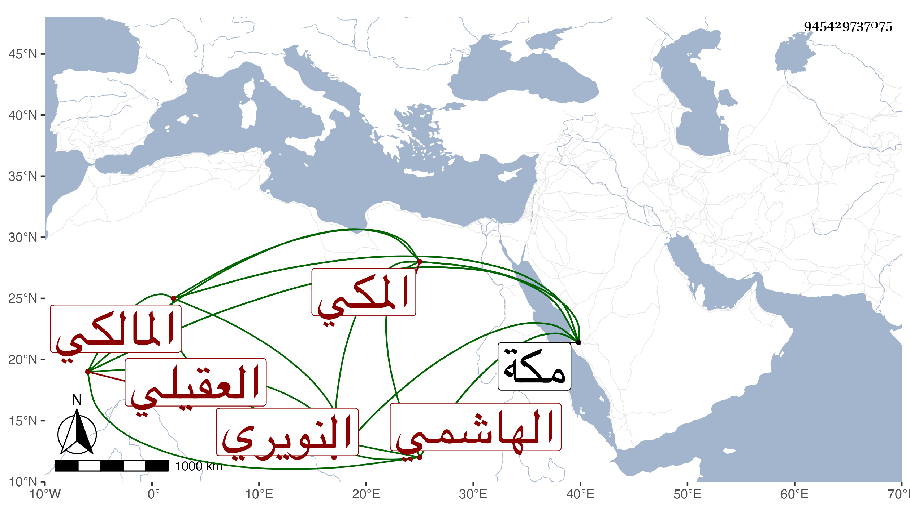

0902Sakhawi.DawLamic.ITO20230111-ara1.EIS1600.945429737075
Biography ID: 945429737075
755
محمد الكمال أبو الفضل الهاشمي العقيلي النويري المكي المالكي أخو الذي قبله وأمه فاطمة ابنة يحيى بن أبي الأصبع . ولد في رجب سنة سبع وتسعين وسبعمائة بمكة ونشأ بها وسمع على الزين المراغي وأجاز له التنوخي وابن الشيخة والبلقيني وابن الملقن والعراقي والهيثمي وآخرون ، وناب في الإمامة بمقام المالكية عن عمه القاضي أبي عبد الله محمد بن علي النويري ثم نزل له عن نصفها ثم عزل ثم أعيد . ومات بعد عجزه عن الإمامة بحيث كان ينوب عنه ولده الفخر أبو بكر حتى مات في سنة سبعين فناب عنه غيره وبعد أن أجاز لي في ليلة الثلاثاء ثامن عشر ذي الحجة سنة أربع وسبعين بمكة رحمه الله .
